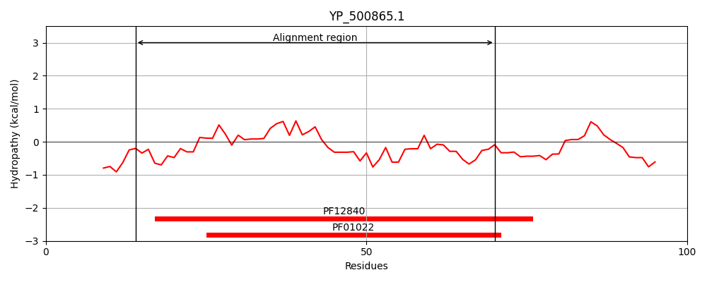
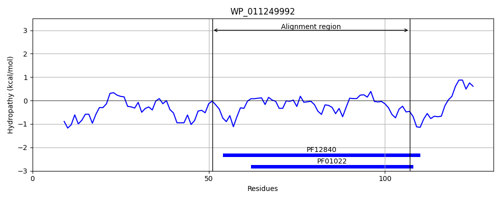
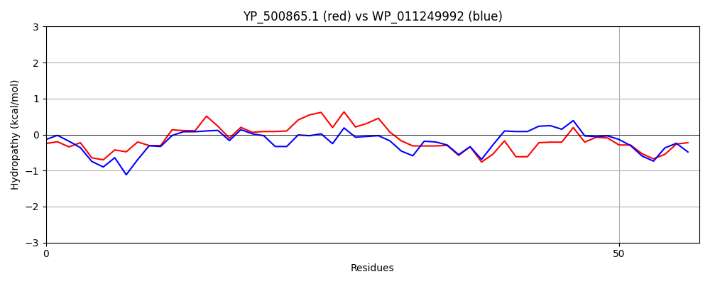

Hit Accession: WP_011249992
Hit TCID: 9.B.333.1.4
Hit Description: gnl|BL_ORD_ID|20794 gnl|TC-DB|WP_011249992.1|9.B.333.1.4 winged helix-turn-helix transcriptional regulator [Thermococcus kodakarensis]
Mach Len: 57
e:0.000133
Query TMS Count : 0
Hit TMS Count: 0
TMS-Overlap Score: 0.000000
Predicted Substrates:None
BLAST Alignment:
| Protein Hydropathy Plots: | |
|---|---|
|  |  |
Pairwise Alignment-Hydropathy Plot: | |
|  | |